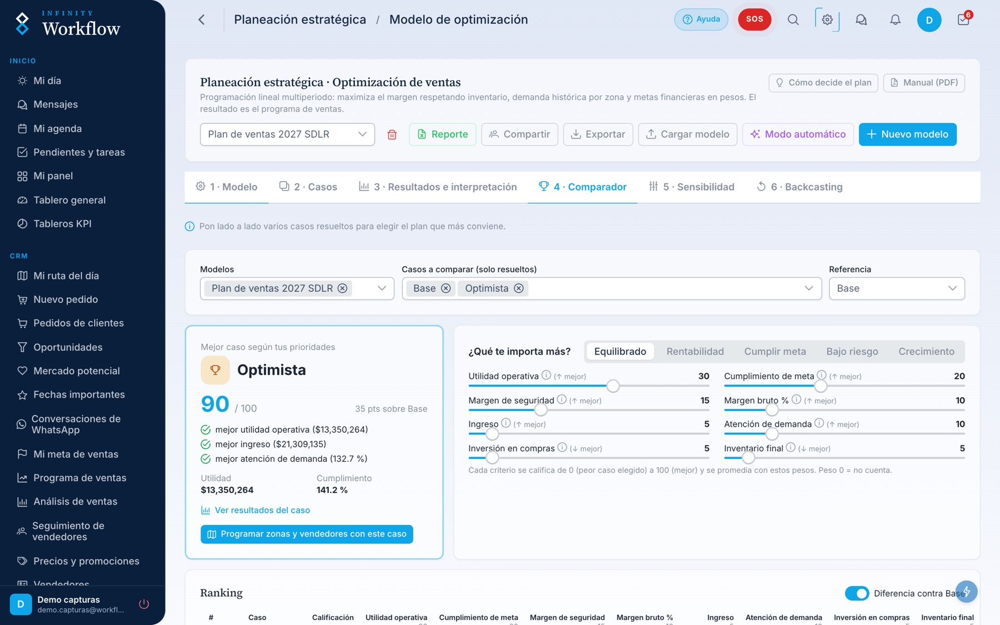
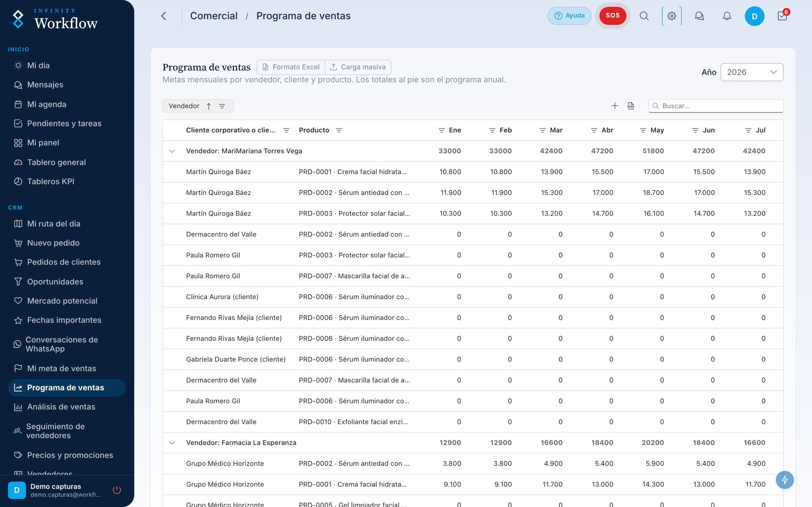
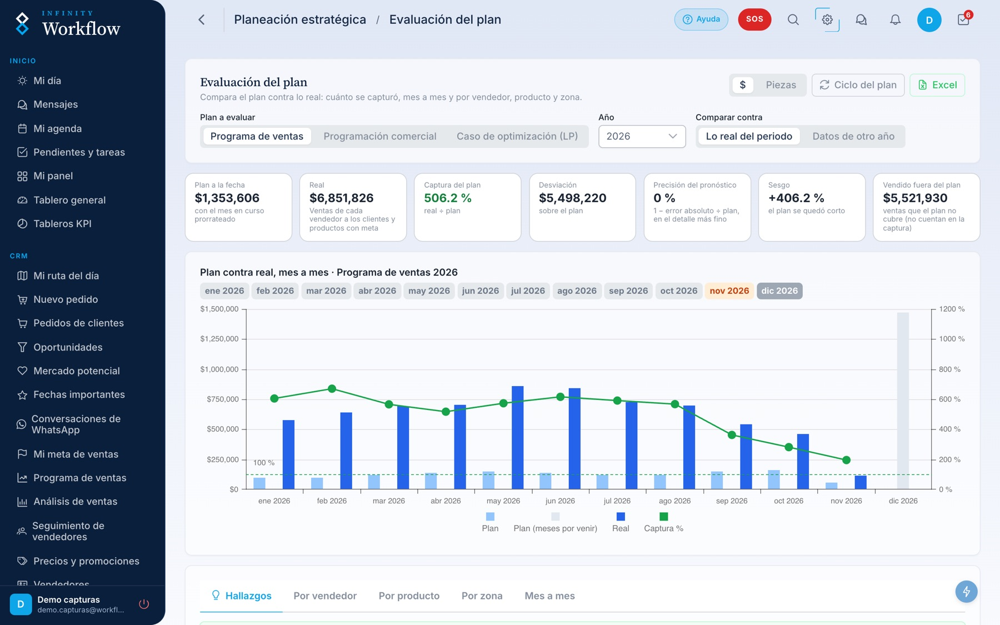
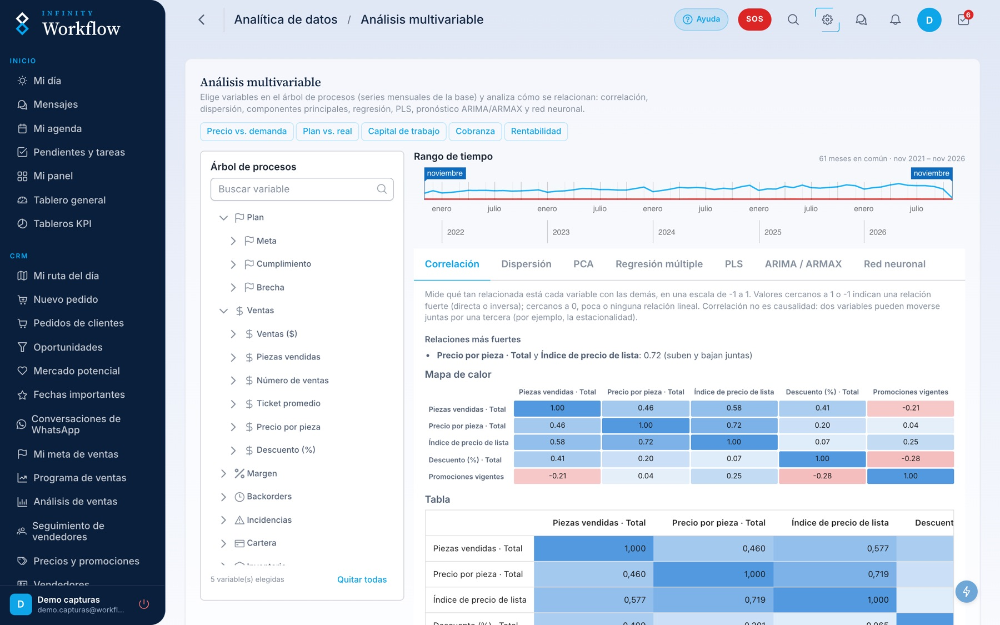
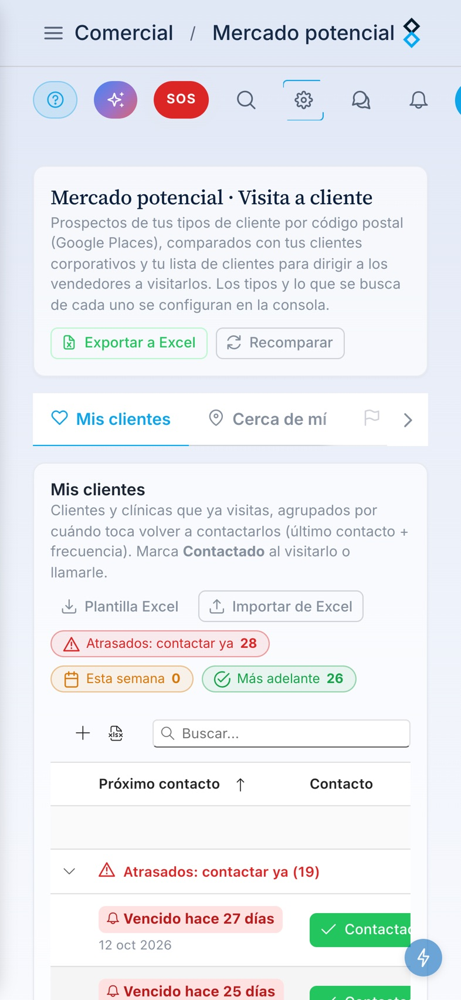
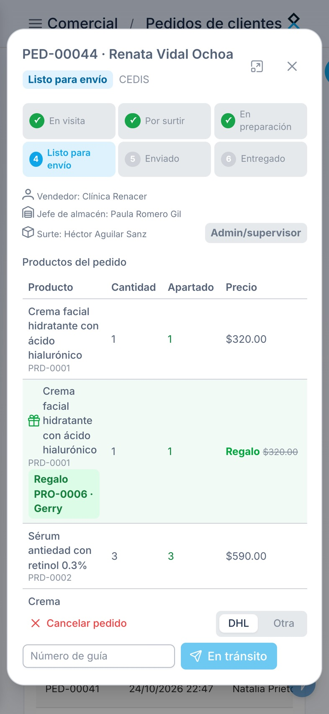
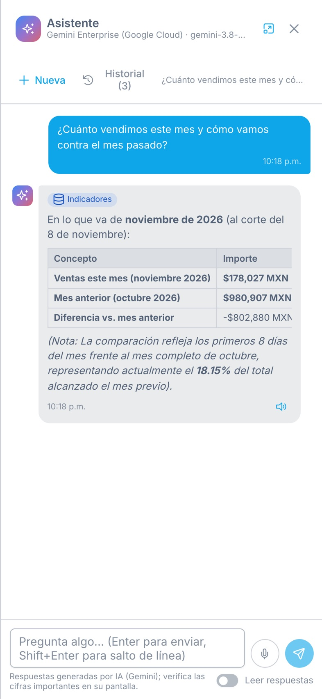
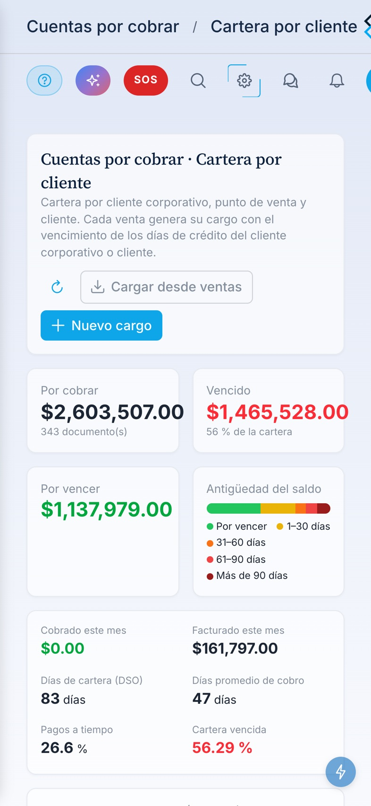

Del plan óptimo a la visita del día.
La plataforma que desarrollamos para que la estrategia se ejecute y se mida: planeación con optimización, programación por responsable, operación diaria y evaluación contra el plan, en una sola herramienta en la nube.
Todo el ciclo comercial y operativo, conectado.
Optimización (LP)
Plan de ventas, compras e inventario que maximiza el margen con demanda por zona, precios, promociones, metas y presupuesto.
- Casos y escenarios comparables
- Sensibilidad y backcasting
- Replaneación con meses cerrados
Programación comercial
Reparte el plan entre vendedores según su historia y capacidad, y acuerda la meta con cada uno.
- Metas por vendedor, producto y mes
- Acuerdo vendedor–supervisor
- Programa de ventas publicado
Operación diaria
Rutas y plan de visitas, pedidos, inventario, compras, operaciones con RACI, personal, flotilla y cobranza.
- Ruta del día y seguimiento en campo
- Inventario y órdenes de compra
- Pendientes, tareas y aprobaciones
KPI y analítica
Tableros de KPI, evaluación del plan contra lo real, análisis multivariable y un asistente de IA que responde con los datos de la empresa.
- Tableros por rol
- Evaluación del plan
- Asistente en español e inglés
Analítica de datos
Descubre qué mueve sus ventas: correlación, regresión, componentes principales, pronóstico y redes neuronales sobre la base de la empresa, sin programar.
- Árbol de procesos con todas las variables
- Correlación, PCA, PLS y ARIMA
- Casos de análisis guardados
De la estrategia a la ejecución medible.
Pantallas reales de Infinity Workflow: así se ve el camino completo, del plan óptimo a la visita de cada vendedor y de regreso a la evaluación.
El plan que más gana, calculado, no estimado.
Un modelo de optimización matemática decide cuánto vender de cada producto, en cada zona y mes, cuánto comprar y cuándo pedir, respetando demanda, inventario, presupuesto y metas.
- Utilidad, ingreso y cumplimiento de meta del plan en una sola vista, con su punto de equilibrio
- Hallazgos en lenguaje de negocio: qué promoción lanzar, qué precio conviene, dónde falta inventario
- Precios por mes y zona, promociones y backorders dentro del mismo plan
Varios escenarios, una decisión con números.
Cada caso prueba supuestos distintos (demanda, precio, costo, tiempo de entrega) y el comparador los califica según lo que a usted le importa más.
- Puntaje de 0 a 100 por rentabilidad, cumplimiento de meta, riesgo o crecimiento
- Sensibilidad y backcasting: qué tan robusto es el plan y qué haría falta para la meta
- Ciclo S&OP para aprobar un solo plan entre comercial, operaciones y dirección

El plan aterriza en la meta de cada persona.
Una segunda optimización reparte el plan entre los vendedores según los productos y zonas que ya trabajan, su tendencia y su capacidad.
- Meta por vendedor, cliente, producto y mes, en pesos y piezas
- Acuerdo vendedor–supervisor y confirmación de recibido
- Programa de ventas publicado que alimenta rutas y tableros

Cada visita sabe de qué meta sale.
El plan de visitas propone a quién ver y qué ofrecer; en campo, check-in, pedido y check-out quedan registrados y el supervisor ve el avance en tiempo real.
- Mapa de rutas y check-ins del equipo, con efectividad de visitas
- Avance contra la meta en monto y piezas, con proyección por pedidos
- Pedidos en la visita con stock, promociones y crédito
Lo planeado contra lo real, todos los días.
La evaluación compara el plan con lo vendido por mes, vendedor, producto y zona, mide la precisión del pronóstico y detecta a tiempo dónde replanear.
- Captura del plan, desviación y sesgo mes a mes
- Hallazgos por vendedor, producto y zona
- Replaneación controlada: meses cerrados intactos y aviso a cada vendedor

Analítica de datos para ver lo que no se ve.
Explore la base completa de la empresa con estadística avanzada: qué variables se mueven juntas, qué explica las ventas y qué esperar en los próximos meses.
- Mapa de correlaciones y relaciones más fuertes, en lenguaje simple
- Regresión, PCA, PLS, ARIMA y redes neuronales sin escribir código
- Casos de análisis que se guardan y se comparten

Un CRM que su equipo sí usa, gratis para empezar.
Empiece con el CRM Base sin costo y, cuando quiera más, active el nivel Pro: un agente de IA que responde con los datos de su empresa y una herramienta para ampliar su cartera de clientes.
Lo esencial para vender, ordenado.
Clientes, visitas, pedidos y cobranza en un solo lugar, conectados con la meta de cada vendedor.
- Cartera de clientes con agenda de contacto y avisos de quién visitar
- Pedidos en la visita con stock, promociones y crédito
- Ruta del día con check-in y check-out y seguimiento del supervisor
- Cuentas por cobrar con antigüedad de saldos
Usuarios limitados · ideal para probar la plataforma
Su CRM, potenciado con IA.
Todo lo del Base, más un agente que analiza por usted y una herramienta para encontrar a sus próximos clientes.
- Agente de IA que responde en lenguaje natural con las ventas, metas, clientes y pendientes de su empresa
- Ampliación de cartera: prospectos de su mercado por código postal, comparados con sus clientes actuales y listos para asignarse a una ruta
- Recomendaciones de productos en cada pedido, según el historial y la meta del vendedor
- Resúmenes de conversaciones de WhatsApp con acuerdos y pendientes
IA con cupo mensual · el administrador decide quién la usa
El CRM en el bolsillo de cada vendedor.
Funciona en el navegador de cualquier teléfono iPhone o Android, sin instalar nada: cartera, pedidos, cobranza y el agente de IA, con la misma información que ve la oficina.




Empresas con equipos en campo.
Nació en una empresa dermocosmética que vende a médicos, y funciona igual en cualquier negocio donde alguien recomienda y otro compra.
Farmacéutica y dermocosmética
Visita médica, metas por representante, programa de ventas, inventario y planeación.
Veterinaria y agroquímicos
Visitas a veterinarios, agrónomos, distribuidores y productores, con planeación por temporada.
Dispositivos médicos
Visita a especialistas, cotizaciones, órdenes de compra, inventario y cobranza.
Materiales, acabados y editorial
Seguimiento a arquitectos o maestros que especifican, proyectos y metas por promotor.
Un piloto con sus propios datos.
Arrancamos con un piloto: cargamos su catálogo, su historia de ventas y su equipo; resolvemos su primer plan óptimo y lo convertimos en metas por persona. Al terminar, usted decide con números.
- En la nube, sin instalar nada; funciona en computadora y celular
- Accesos por rol y por sección, doble factor y passkeys
- Cuentas de prueba para el piloto
- Español e inglés, incluidos reportes y asistente